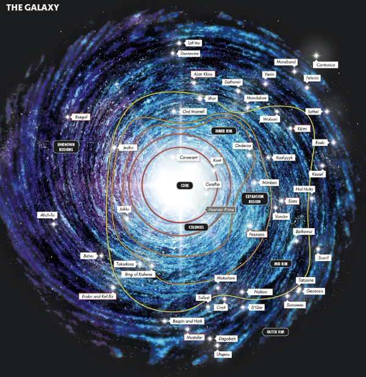
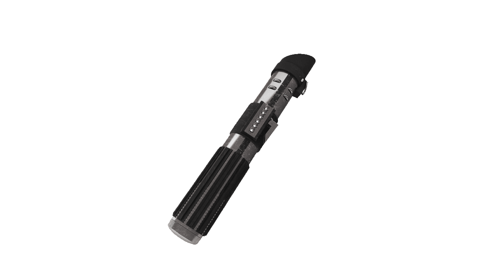

There are 7 lightsaber combat forms, the first is called
Shii-cho, this can also be
called, The Way of the Sarlacc, or
The Determination form. This style was created
when
the jedi were transitioning from metal swords to lightsabers, and
guided the user through basic
forms; however, since this was created before the emergence of Dark
Jedi or Sith it
didn’t address lightsaber to lightsaber combat and was replaced by
form 2. While form 1
is mostly used to train the basics of lightsaber combat, when used
against an opponent
it is wild and raw, relying on tactics, and prioritizes disarming the
opponent over injuring them.
User: Jedi Master Kit Fisto
Form 2 of the 7 lightsaber forms is called Makashi,
also known as
The Way of the Ysalamiri, or
The Contention Form. Form 2 was created to counter
form one’s sweeping movements, it is a form the prioritizes precision
over power. This form
uses jabs, parries, and light cuts over slashes, blocks, and chops, it
also required precise
movements and expert timing. The foundation of the form lies in the
footwork, shifting their
feet to maintain perfect balance, using this the user would advance or
retreat as necessary.
User: Sith Lord Count Dooku, or Darth Tyranus
Form 3 of the 7 lightsabers forms is called Soresu,
also known as The Way of the Mynock,
or The Resilience Form. This form was created as an
extension of the blaster reflection
used in form 1, this form focuses entirely on defense. Users of this
form stay on the
defensive while they analyze their opponents’ movements looking for
weaknesses, they wait for
their enemy to fatigue or become frustrated and make mistakes before
they strike.
User: Jedi Master Obi-Wan Kenobi
Form 4 out of 7 is called Ataru, also known as
The Aggression Form. Form 4 was
developed centuries after form 3 and could be considered the opposite
of form 3 because
Ataru focused solely on offense while Soresu focused on defense. Ataru
is best suited for open
spaces as it relies on using the force to enhance movements and is
overall a highly acrobatic style.
User: Ahsoka Tano
Form 5 out of 7 has two disciplines Djem So, and
Shien, this form is also known as
The Way of the Krayt Dragon, or
The Perseverance Form. This form was created by
users of Soresu who thought that the fights were taking too long when
they were waiting for
an opening instead of creating their own openings. Shien, the
classical form of form 5, was more
adept at blocking blaster bolts instead of lightsaber combat, whereas
Djem So was specifically created
for lightsaber combat; however, both forms relied on using their
opponent’s power against them.
User: Anakin Skywalker, Luke Skywalker
Form 6 out of 7 is called Niman, also known as
The Way of the Rancor,
The Moderation
Form, or
The Diplomat’s Form. This form didn’t specialize in
one aspect, instead
was a culmination of everything, this has the drawbacks of not having
any significant advantage,
but also not having many drawbacks as well. This is a more relaxed
form mainly
used by Jedi who preferred to devote their time to studying or
diplomacy; however, if mastered this form could be devastating in
combat.
User: General Grievous, Exar Kun(former Jedi turned Sith)
The last form, form 7 is called Juyo, with a
derivative called Vapaad, this form
is also known as The Way of the Vornskr, or
The Ferocity Form. This form
was a highly aggressive form of lightsaber combat that relied on using
one’s emotions to
gain dominance in combat, thus the Jedi banned this form. Later the
derivative of this
form was created called Vapaad, this version of the form channeled
the user’s inner darkness during combat and accept the opponent’s
fury.
User (Juyo): Darth Maul, Galen Marek
User (Vapaad): Mace Windu, Depa Billaba